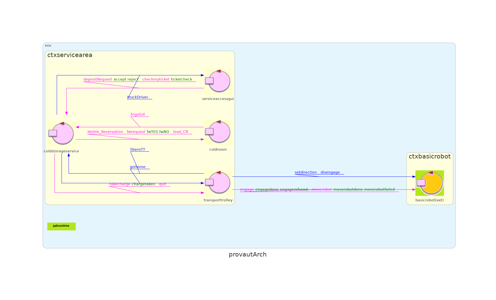

Dopo aver chiarito la consegna del committente procediamo col realizzare uno Sprint1 seguendo le linee guida di Appl1-HTTPSprint1.html e prendendo in considerazione ciò che è stato discusso nello Sprint0 .
Lo Sprint1 mira a produrre una prima versione del core applicativo funzionante, il goal di questo Sprint1 sarà:
Già discussi nello Sprint0.
Analizziamo il problema per capire quali sono le maggiori problematiche da affrontare, le tecnologie da usare e le risorse necessarie.
L'attore TransportTrolley usa il BasicRobot fornito dal committente per muoversi nella ServiceArea, segue una serie di step definiti per le sue azioni, e informa il ServiceAccessGUI dell'avvenuto scarico in ColdRoom per liberare il Truck Driver.
Nello Sprint2 si pensa di:
Dividiamo i passi dello Sprint1 in sezioni:
testare il funzionamento della logica della consegna e validazione dei ticket da parte di ColdStorageService, e quindi avere anche una logica della gestione del peso nella ColdRoom funzionante.
il trolley dovrà comunicare effettivamente con BasicRobot e produrre nella ScenaWebGL il movimento dello stesso, da HOME a INDOOR, da INDOOR a COLDROOM e da COLDROOM a HOME.
aggiungere la gestione dei casi in cui si hanno più richieste mentre il TransportTrolley è 'occupato'.
Alla fine di tutti questi passi si avrà un core funzionante dell'applicazione e si potrà procedere con la discussione dello Sprint2.
Una idea per l'architettura del primo passo dello Sprint1, è la seguente:
Al seguente link sprint.qak che ha prodotto questi risultati:
// copia esempio run codice sprint.qak
Starting a Gradle Daemon (subsequent builds will be faster)
> Configure project :
.......
> Task :run
............
COLDSTORAGE: attivo
COLDSTORAGE: attendo un messaggio.
%%% %%% ActorBasicFsm | INIT coldroom
sysUtil | createActor class for it.unibo.transporttrolley.Transporttrolley class it.unibo.transporttrolley.Transporttrolley
COLDROOM: attivo, peso attuale in frigo = 0
COLDROOM: aspetto richieste da CStorage.
%%% %%% ActorBasicFsm | INIT transporttrolley
sysUtil | createActor class for it.unibo.serviceaccessgui.Serviceaccessgui class it.unibo.serviceaccessgui.Serviceaccessgui
TRANSPORTTROLLEY: attivo!
TRANSPORTTROLLEY: attendo messaggi da CStorage.
%%% %%% ActorBasicFsm | INIT serviceaccessgui
ACCESSGUI : attivo.
ACCESSGUI : chiedo un ticket.
COLDSTORAGE : chiedo a coldroom se c'è spazio.
COLDROOM : Spazio disponibile! Prenotazione avvenuta. Peso allocato in frigo: 15
COLDROOM : il Peso totale in frigo è: 0
COLDROOM: aspetto richieste da CStorage.
COLDSTORAGE : Consegno ticket, numero 1
COLDSTORAGE: attendo un messaggio.
ACCESSGUI: ticket accettato, Ticket : T_1749464354_0
ACCESSGUI: consegno ticket T_1749464354_0
COLDSTORAGE : controllo il ticket di SAGUI, ticket valido? false
COLDSTORAGE : now 1749464364 < StartTime 1749464354 + 10 = false
COLDSTORAGE : chiedo a coldroom di togliere la prenotazione.
COLDSTORAGE: attendo un messaggio.
ACCESSGUI: ticket accettato? false
COLDROOM : Elimino prenotazione. Peso allocato in frigo: 0
ACCESSGUI : chiedo un ticket.
COLDROOM: attivo, peso attuale in frigo = 0
COLDSTORAGE : chiedo a coldroom se c'è spazio.
COLDROOM : Spazio disponibile! Prenotazione avvenuta. Peso allocato in frigo: 15
COLDROOM : il Peso totale in frigo è: 0
COLDSTORAGE : Consegno ticket, numero 2
....
ACCESSGUI: ticket accettato, Ticket : T_1749464364_1
ACCESSGUI: consegno ticket T_1749464364_1
COLDSTORAGE : controllo il ticket di SAGUI, ticket valido? true
COLDSTORAGE : now 1749464371 < StartTime 1749464364 + 10 = true
ACCESSGUI: ticket accettato? true
ACCESSGUI: effettua scarico!
COLDSTORAGE: chiamo transporttrolley in INDOOR, busy= true
COLDSTORAGE: truck driver può andare.
TRANSPORTTROLLEY: Prendo il carico. Vado in COLDROOM.
COLDSTORAGE: coldRoom deve togliere l'allocazione e confermare lo spazio.
ACCESSGUI: ho finito vado via!
COLDSTORAGE: attendo un messaggio.
COLDROOM s2: Peso totale in frigo: 15 e lo spazio allocato ora è: 0
...
TRANSPORTTROLLEY: ho caricato il frigo.
COLDSTORAGE: transporttrolley deve andare in HOME. busy= false
COLDSTORAGE: attendo un messaggio.
TRANSPORTTROLLEY: vado in HOME.
.......
...
TRANSPORTTROLLEY: vado in HOME.
TRANSPORTTROLLEY: attendo messaggi da CStorage.
ACCESSGUI: consegno ticket T_1749464381_4
COLDSTORAGE : controllo il ticket di SAGUI, ticket valido? false
COLDSTORAGE : now 1749464391 < StartTime 1749464381 + 10 = false
ACCESSGUI: ticket accettato? false
COLDSTORAGE : chiedo a coldroom di togliere la prenotazione.
COLDROOM : Elimino prenotazione. Peso allocato in frigo: 0
...
ACCESSGUI : chiedo un ticket.
COLDSTORAGE: attendo un messaggio.
COLDROOM: attivo, peso attuale in frigo = 45
COLDSTORAGE : chiedo a coldroom se c'è spazio.
COLDROOM: aspetto richieste da CStorage.
COLDROOM : Spazio disponibile! Prenotazione avvenuta. Peso allocato in frigo: 15
COLDROOM : il Peso totale in frigo è: 45
COLDSTORAGE : Consegno ticket, numero 6
COLDROOM: aspetto richieste da CStorage.
ACCESSGUI: ticket accettato, Ticket : T_1749464391_5
COLDSTORAGE: attendo un messaggio.
ACCESSGUI: consegno ticket T_1749464391_5
COLDSTORAGE : controllo il ticket di SAGUI, ticket valido? true
COLDSTORAGE : now 1749464399 < StartTime 1749464391 + 10 = true
COLDSTORAGE: chiamo transporttrolley in INDOOR, busy= true
ACCESSGUI: ticket accettato? true
COLDSTORAGE: truck driver può andare.
TRANSPORTTROLLEY: Prendo il carico. Vado in COLDROOM.
.....
ACCESSGUI : chiedo un ticket. [45s]
COLDSTORAGE : chiedo a coldroom se c'è spazio.
COLDROOM: non c'è spazio, rifiuta.
COLDROOM : il Peso totale in frigo è: 60
COLDSTORAGE : non c'è spazio, richiesta rifiutata
ACCESSGUI: rifiutato
TRANSPORTTROLLEY: ho caricato il frigo.
COLDSTORAGE: transporttrolley deve andare in HOME. busy= false
COLDSTORAGE: attendo un messaggio.
TRANSPORTTROLLEY: vado in HOME.
....
In questo passo vogliamo gestire il movimento del BasicRobot facendolo comunicare con il TransportTrolley, creiamo un QActor del TransportTrolley con l'unico scopo di comunicare col BasicRobot.
Decidiamo che conviene vedere il BasicRobot come un Attore Esterno, come spiegato in: QakActors23Demo.html#external-caller1 anche perchè i messaggi con il quale è possibile interagire col BasicRobot sono già stati forniti dal committente e li avevamo indicati nello Sprint0.
Nel codice a questo link provaT.qak studiamo come mandare i comandi di movimento al BasicRobot.
Per poter vedere i risultati di questo test è necessario prima far partire basicrobot23 con il comando: docker compose -f basicrobot23.yaml up
Successivamente far partire provaT.qak da eclipse e osservare il comportamento del robot nella scena.
L'achitettura di questo sistema è la seguente: 
Qui sono stati aggiunti degli altri messaggi quali:
Più i messaggi che avvengono tra il TransportTrolley ed il BasicRobot indicati nello Sprint0.
Per vedere i risultati è necessario prima far partire basicrobot23.yaml con il comando: docker compose -f basicrobot23.yaml up
E successivamente far partire provaut.qak da eclipse.
GIT repo: https://github.com/kuri0317/issLab23Mio
{kind=link}
{kind=link}